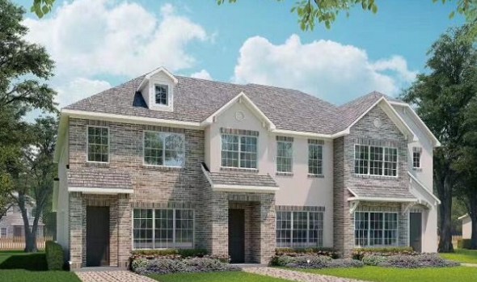
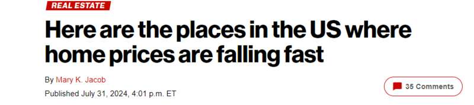

一份新报告显示，曾经蓬勃发展的科技天堂德州奥斯汀现在变成了全美房价下跌最快的地区。由于抵押贷款利率高企以及需求降温，该市房价在过去一年暴跌了3.5%。

（来源：nypost）
近年来，奥斯汀房价飞涨，主要得益于繁荣的科技产业和极具吸引力的低税率。然而，那些辉煌的日子似乎正在消逝。
CoreLogic的最新报告描绘了全美范围内房地产市场降温的景象，其中奥斯汀最引人注目。
总体而言，5月份全美房价上涨了4.9%。但在一些知名城市，情况却有所不同。数据显示，旧金山房价下跌了2.6%，新奥尔良下降了0.9%。佛州开普科勒尔（Cape Coral）和北港（North Port）也感受到了寒意，分别下跌了0.6%和0.2%。
30年期固定抵押贷款利率飙升至7%左右，给市场造成了打击。仅在5月份，100个最大都市圈中就有16个出现了价格下跌，其中德州埃尔帕索、印第安纳州加里和纽约州布法罗也位列前五。
尽管经济低迷，6月份仍有34%的房屋以高于要价的价格售出，远高于新冠疫情前的平均水平（23%）。这一趋势是由高价低库存市场的强劲需求推动的。
据报道，5月份约有10万名借款人的抵押贷款逾期六个月或更长时间，这是自金融危机暴发以来从未有过的情况。然而，止赎率降至0.2%，为2022年初以来的最低水平，表明许多后期拖欠问题正在得到解决。
6月份，有8.6%的签约房屋估价少于售价，低于一年前的10.7%。这一转变使评估差距回到了疫情前的水平，规模较小的入门级住房更容易被首次购房者高估。
今年上半年，新建住宅销量暴跌17%，只有俄勒冈州波特兰和内华达州拉斯维加斯逆势上涨了2%。与此同时，投资者活动也有所降温，6月份投资者购买单户住宅的比例为23%，低于1月份的28%。这是两年来投资者份额的最低值，但仍高于疫情前的水平。
此外，6月份现房销量较去年同期下降了19％，早期季节性放缓可能是由于抵押贷款利率飙升所致。不过，6月份待售房屋数量较2023年增长了9%，暗示市场可能出现反弹。